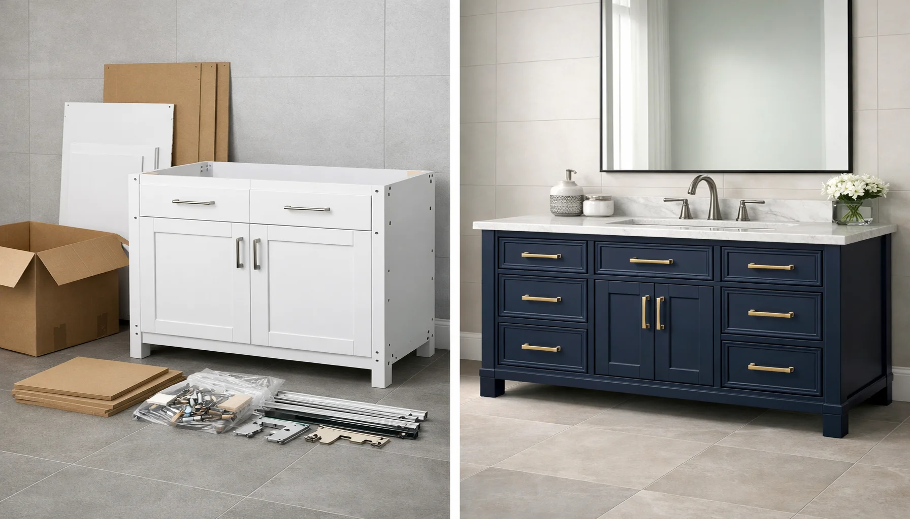

RTA vs Pre-Assembled Bathroom Vanities: Complete Comparison (2026)

Home & Bathroom Expert | Bathroom renovation consultant
This article contains affiliate links. If you purchase through these links, we may earn a small commission at no extra cost to you. Full disclosure.
Quick Answer: RTA or Pre-Assembled?
Choose RTA if you are comfortable with basic tools, want to save 30-50% on cost, or need a vanity shipped to a remote area at lower freight rates. Choose pre-assembled if you have zero interest in assembly, need your vanity installed the same day it arrives, or want guaranteed factory-built quality with no risk of assembly errors.

Choosing between an RTA (Ready To Assemble) and a pre-assembled bathroom vanity is one of the first decisions you will face in a bathroom renovation. The choice affects your budget, your timeline, and potentially the quality of the finished product. Get it right, and you save hundreds of dollars or hours of frustration. Get it wrong, and you end up with a wobbly cabinet or an overpaid purchase.
RTA vanities ship flat-packed in compact boxes, requiring you to assemble them at home with basic tools. Pre-assembled vanities arrive fully built and ready to install. Each approach has real advantages and real drawbacks that depend entirely on your situation, skills, and priorities.
In this guide, we break down every factor that matters: true cost comparisons (including hidden expenses), quality differences across price ranges, assembly difficulty, durability in humid bathroom environments, and shipping logistics. Whether you are renovating your master bath or updating a guest bathroom, this comparison will help you make the right call.
For our top-rated vanity picks, see our best bathroom vanities roundup. If you are working within a tight budget, our best vanities under $500 guide covers excellent options in both RTA and pre-assembled categories.
What Are RTA and Pre-Assembled Vanities?
Before we compare, let us define exactly what each term means, because the terminology can be confusing. Some retailers blur the lines by offering "partially assembled" options, but the two main categories are distinct.
RTA (Ready To Assemble)
Definition: A bathroom vanity that ships flat-packed in one or more boxes. All panels, shelves, doors, hardware, and instructions are included. You assemble the cabinet yourself before installing it in your bathroom.
- Ships flat in compact packaging
- All hardware and fasteners included
- Step-by-step instructions (usually with video)
- Requires basic tools and 1-3 hours
- Lower shipping cost due to smaller package
- 30-50% cheaper than equivalent pre-assembled
Pre-Assembled
Definition: A bathroom vanity that arrives fully constructed at the factory. The cabinet, doors, drawers, and hardware are all installed. You only need to place it in position and connect plumbing.
- Arrives fully built and ready to install
- No assembly tools or skills required
- Factory-quality construction consistency
- Higher shipping cost (larger, heavier package)
- Instant installation upon delivery
- Less risk of assembly errors
Think of it like furniture from a big-box store versus a boutique furniture shop. The IKEA model (RTA) offers value through efficient packaging and customer labor, while the traditional model (pre-assembled) offers convenience at a premium. Neither is inherently better; it depends on what you value most.
If you are new to bathroom renovations, start with our complete guide to choosing a bathroom vanity for the fundamentals before diving into this RTA vs pre-assembled comparison.
Head-to-Head Comparison Table
Here is the full side-by-side breakdown across every factor that matters. We have highlighted the winner in each category.
| Factor | RTA Vanities | Pre-Assembled | Winner |
|---|---|---|---|
| Price Range (36") | $100 - $400 | $200 - $800+ | RTA |
| Assembly Time | 1 - 3 hours | 0 (ready to install) | Pre-Assembled |
| Tools Required | Screwdriver, drill, level, mallet | None for assembly | Pre-Assembled |
| Quality Consistency | Varies by assembler skill | Factory-controlled | Pre-Assembled |
| Shipping Cost | $0 - $50 (compact boxes) | $50 - $200+ (freight/LTL) | RTA |
| Shipping Damage Risk | Low (flat-packed, padded) | Medium-High (corners, doors exposed) | RTA |
| Customization | Some (can modify during assembly) | None (what you get is final) | RTA |
| Durability Potential | Depends on build quality + assembly | Consistent factory joints | Tie |
| Return/Exchange Ease | Easy (compact boxes) | Difficult (bulky, heavy) | RTA |
| Skill Level Needed | Basic DIY skills | No skills needed | Pre-Assembled |
Score: RTA wins 5 categories, Pre-Assembled wins 4, with 1 tie. But raw category counts do not tell the full story. A budget-conscious DIYer will weight cost and shipping heavily, while a time-strapped homeowner will prioritize assembly time and guaranteed quality. Let us dig deeper into each side.
RTA Vanities: The Complete Picture
How RTA Vanities Work
When your RTA vanity arrives, you will receive one to three flat boxes containing pre-cut panels, pre-drilled holes, all necessary hardware (cam locks, dowels, screws, hinges, drawer slides), and an instruction manual. Most quality manufacturers also provide a QR code linking to an assembly video.
The assembly process follows a predictable pattern:
- Unbox and inventory all parts and hardware (15 minutes)
- Assemble the cabinet box by connecting side panels, bottom, and back (30-45 minutes)
- Install shelves and internal components (15-20 minutes)
- Attach doors and install hinges, adjust soft-close mechanisms (20-30 minutes)
- Install drawer slides and drawers if applicable (15-25 minutes)
- Final adjustments and leveling (10-15 minutes)
Total assembly time: 1.5 to 3 hours for a typical 36-inch vanity. First-timers should expect to be closer to the 3-hour mark. Experienced DIYers can often finish in under 90 minutes.
Tools You Will Need
Most RTA vanities require only basic tools. Here is the essential and optional toolkit:
- Phillips screwdriver
- Cordless drill/driver
- Level (24-inch preferred)
- Rubber mallet
- Tape measure
- Pencil for marking
- Wood glue (for extra strength)
- Clamps (optional but helpful)
If you already own basic tools, your additional cost is zero. If you need to buy tools, budget $30-$80 for a basic kit. These tools will serve you well beyond this single project, including when you install the vanity itself.
Quality Range in RTA Vanities
This is where many buyers get confused. RTA vanities span an enormous quality range:
- Budget ($100-$200): Particleboard or MDF construction, cam lock assembly, melamine finish, basic hinges. Functional but limited lifespan (5-8 years in humid bathrooms).
- Mid-Range ($200-$350): Plywood sides with MDF doors, soft-close hinges, better finish options, dovetail drawer construction. Solid 10-15 year lifespan.
- Premium ($350-$500+): Full plywood construction, dovetail joints throughout, premium soft-close hardware, water-resistant finishes, and superior edge banding. Can last 15-20+ years with proper care.
Pro tip: The single best indicator of RTA vanity quality is the drawer construction. Dovetail drawers signal a manufacturer who invests in quality throughout. Stapled or glued butt-joint drawers usually indicate corners cut elsewhere too.
RTA Advantages Most People Overlook
Easier to get through tight spaces. If your bathroom is upstairs, down a narrow hallway, or accessed through a small doorway, flat-packed RTA boxes are dramatically easier to maneuver than a fully assembled 36-inch or 48-inch vanity. This alone makes RTA the only practical option for many older homes with narrow doorways.
Lower shipping damage rates. Flat-packed panels nestled in protective packaging suffer far less shipping damage than assembled vanities with exposed corners, pre-hung doors, and protruding hardware. Pre-assembled vanities shipped via freight have reported damage rates of 15-20%, while RTA damage rates are typically under 5%.
Inspection before commitment. You can inspect every panel, every edge, and every piece of hardware before you build. If anything is damaged or defective, it is far easier to return compact flat boxes than a fully assembled cabinet.
Pre-Assembled Vanities: The Complete Picture
The Convenience Factor
The primary selling point of pre-assembled vanities is undeniable: they arrive ready to install. There is no sorting hardware, no following instructions, no aligning cam locks, and no risk of assembly mistakes. You unbox, position, level, secure to the wall, and connect plumbing. For many homeowners, this convenience is worth every extra dollar.
This is especially valuable in three scenarios:
- Contractor installations: Professional installers charge by the hour. An RTA vanity that takes 2 hours to assemble before installation adds $100-$200 in labor costs, negating much of the price savings.
- Time-critical renovations: If your bathroom is your only bathroom and every day without it is an inconvenience, same-day installation matters.
- Multiple vanity projects: Installing vanities in several bathrooms (e.g., a full home renovation) multiplies assembly time. Pre-assembled units keep the project moving.
Factory Quality Consistency
When a vanity is assembled in a factory, every joint is made using industrial equipment: precision clamps, calibrated pneumatic nailers, and professional-grade adhesives applied under controlled conditions. The result is consistent quality across every unit.
This matters because the most common failure points in bathroom vanities are joints that loosen over time due to humidity cycling. Factory assembly with industrial adhesives and mechanical fasteners creates stronger, more consistent bonds than most home assemblers achieve with included cam locks and a rubber mallet.
Shipping warning: The biggest drawback of pre-assembled vanities is shipping damage. Fully built cabinets are inherently harder to protect during transit. Always inspect your delivery before signing, photograph any damage, and test all doors and drawers immediately. Many retailers offer only a 48-hour damage reporting window.
Higher Shipping Costs Explained
Pre-assembled vanities cost more to ship because they occupy significantly more volume. A 36-inch RTA vanity might ship in two boxes totaling 4 cubic feet. The same vanity pre-assembled occupies 12+ cubic feet and requires LTL (less-than-truckload) freight shipping for larger sizes.
Shipping cost comparison for a typical 36-inch vanity:
- RTA: Free shipping to $50 (standard parcel carriers)
- Pre-assembled: $50-$150 via standard delivery, $150-$300+ for white-glove or inside delivery
- Remote/rural areas: Pre-assembled freight surcharges can add $100-$200 extra
For buyers in remote or rural areas, the shipping cost difference alone can exceed $200, making RTA the clear financial winner regardless of other factors.
Pre-Assembled Quality Considerations
Not all pre-assembled vanities are premium products. The market includes:
- Budget ($200-$400): Often particleboard with laminate finish, assembled overseas. The "pre-assembled" advantage is real but the underlying materials may be no better than budget RTA.
- Mid-Range ($400-$600): Plywood and hardwood combinations, domestic or quality import assembly, soft-close hardware standard. This is where pre-assembled truly shines.
- Premium ($600-$1,200+): Solid hardwood, hand-finished details, premium hardware throughout. At this price point, you are paying for craftsmanship that genuinely cannot be replicated in flat-pack form.
Complete Cost Breakdown: The Real Numbers
The sticker price tells only part of the story. Here is the true total cost comparison, including every hidden expense.
True Cost Comparison: 36-Inch Vanity (Cabinet Only)
RTA Vanity
$100 - $400
- Vanity unit: $100 - $400
- Shipping: $0 - $50
- Tools (if needed): $0 - $80
- Assembly time value: $0 - $75*
- Mistake risk buffer: $0 - $30
True total: $100 - $635
*Based on 1-3 hrs at $25/hr opportunity cost
Pre-Assembled Vanity
$200 - $800+
- Vanity unit: $200 - $800+
- Shipping: $50 - $200
- Tools: $0
- Assembly time: $0
- Damage inspection time: minimal
True total: $250 - $1,000+
Shipping costs vary dramatically by location
Hidden Costs Nobody Talks About
RTA Hidden Costs
- Tool investment ($30-$80): If you do not own a drill, level, and basic tools, this is a real upfront cost. However, these tools retain their value and usefulness for years.
- Assembly mistakes ($0-$50): Stripped screws, misaligned cam locks, and overtightened connections happen. Budget $20-$50 for a hardware store run to replace damaged parts, especially on your first build.
- Time cost: Your time has value. If you bill $50/hour as a freelancer, spending 3 hours on assembly "costs" $150 in lost productivity. If you enjoy DIY projects, this cost is zero or even negative.
- Wood glue ($5-$10): Not always included but highly recommended for permanent joints. Professional builders always add glue to RTA joints for long-term durability.
Pre-Assembled Hidden Costs
- Delivery surcharges ($50-$200): "Free shipping" often means curbside only. Getting it inside your home, upstairs, or to the bathroom may require paid white-glove delivery or a strong friend.
- Damage replacement time: If your pre-assembled vanity arrives damaged (15-20% of freight shipments), the return and replacement process can take 2-4 weeks and significant hassle.
- Access challenges ($0-$200): If an assembled 48-inch vanity cannot fit through your doorways, you may need to remove a door or even consider an RTA alternative after all.
When comparing prices, also consider what quality vanities you can find under $500. In that budget range, RTA options give you plywood construction, while pre-assembled options are typically limited to particleboard or MDF.
Quality & Durability: What Actually Matters
Here is the truth that most comparison articles miss: the assembly method (RTA vs pre-assembled) matters far less than the materials and construction quality. A premium plywood RTA vanity will outlast a budget particleboard pre-assembled vanity by a decade.
Material Quality Hierarchy
From most to least durable in bathroom environments:
- Solid hardwood (oak, maple, birch): 20+ year lifespan, naturally moisture-resistant with proper finish
- Marine-grade plywood: 15-20 years, excellent humidity resistance, the gold standard for bathroom cabinetry
- Standard plywood: 12-18 years, good performance with proper sealing
- MDF (Medium Density Fiberboard): 8-12 years, acceptable if edges are fully sealed, swells if water penetrates finish
- Particleboard: 5-8 years, most vulnerable to moisture, budget option only
Joint Strength Comparison
The joinery method matters more than whether a human or a machine assembled the cabinet:
| Joint Type | Strength Rating | Found In | Reassembly Possible? |
|---|---|---|---|
| Dovetail | Excellent | Premium RTA & Pre-assembled | No |
| Dowel + Glue | Very Good | Mid-range and up | No |
| Cam Lock | Good | Standard RTA | Yes |
| Screw Only | Fair | Budget RTA | Yes |
| Staple + Glue | Fair | Budget Pre-assembled | No |
Durability tip: Regardless of assembly method, the number one factor in bathroom vanity longevity is moisture protection. Ensure your bathroom has adequate ventilation (an exhaust fan rated for your room size), and wipe up standing water around the vanity base promptly. These simple habits add years to any vanity's lifespan.
The Assembly Quality Variable
The honest reality: a factory-assembled vanity has more consistent joint quality than a home-assembled one, assuming equal materials. Factory workers use calibrated tools, apply adhesive at optimal temperatures, and clamp joints with precise pressure for exact drying times.
However, a careful home assembler who adds wood glue to every cam lock joint, uses clamps during assembly, and follows instructions precisely can achieve results that are 90-95% as strong as factory assembly. The remaining 5-10% difference is negligible for residential bathroom use.
The real risk is a careless assembly: stripped cam locks, cross-threaded screws, and panels forced into misalignment. If you are prone to rushing through projects or ignoring instructions, the pre-assembled route eliminates this risk entirely.
Who Should Buy RTA Vanities
RTA vanities are the right choice for a specific set of circumstances. Here is the honest assessment:
Ideal RTA Buyers
- DIY enthusiasts who enjoy building and find assembly satisfying rather than frustrating
- Budget-conscious renovators who want to maximize vanity quality per dollar spent
- Homeowners in remote or rural areas where freight shipping surcharges make pre-assembled vanities disproportionately expensive
- Older homes with narrow doorways where a fully assembled vanity physically cannot be moved to the bathroom
- Multi-unit property owners doing several bathrooms, where assembly savings compound significantly
- Anyone who owns basic tools and has 2-3 hours of free time on a weekend
RTA Cost Savings Example
Consider a small bathroom vanity project:
- RTA 30-inch plywood vanity: $230
- Equivalent pre-assembled: $420
- Shipping saved: $75
- Total savings: $265
That $265 savings can fund a better countertop, a nicer faucet, or a significant chunk of the plumbing installation cost.
When to Avoid RTA
- You have zero experience with any kind of assembly and no desire to learn
- Your contractor charges hourly and assembly time will erase price savings
- You need the vanity functional within hours of delivery
- You are prone to frustration with detailed instructions and small hardware
Who Should Buy Pre-Assembled Vanities
Ideal Pre-Assembled Buyers
- Non-DIY homeowners who have never assembled furniture and do not want to start with a permanent bathroom fixture
- Time-constrained renovators where every day of bathroom downtime is a significant inconvenience
- Quality-first buyers who want the assurance of factory-built joints and professional assembly
- Luxury bathroom projects where the vanity is a premium, hand-finished piece that cannot be replicated in RTA form
- Contractor-managed renovations where the installer's hourly rate makes assembly time expensive
- Anyone prioritizing peace of mind over maximum value
Pre-Assembled Convenience Example
A typical modern bathroom vanity installation timeline:
- Delivery to room: 30 minutes
- Position and level: 15 minutes
- Secure to wall: 20 minutes
- Connect plumbing: 30-45 minutes
- Total: Under 2 hours to fully functional
Versus 2-3 hours of assembly PLUS the installation time with RTA.
When Pre-Assembled Is Not Worth the Premium
- You are comparing a $200 pre-assembled particleboard vanity to a $200 RTA plywood vanity (the RTA unit is objectively better quality)
- Your location has freight surcharges that inflate the pre-assembled cost by 30%+
- You cannot get the assembled unit through your doorways
- You have a farmhouse bathroom with tight hallways typical of older rural homes
Frequently Asked Questions
What does RTA mean for bathroom vanities?
RTA stands for Ready To Assemble. An RTA bathroom vanity ships flat-packed with all parts, hardware, and instructions included. You assemble it yourself using basic tools like a screwdriver, drill, and level. Assembly typically takes 1 to 3 hours depending on the model complexity and your experience level.
Are RTA vanities lower quality than pre-assembled?
Not necessarily. RTA vanity quality varies enormously by manufacturer. Budget RTA vanities ($100-$200) often use particleboard and cam locks, which are less durable. However, premium RTA vanities ($300-$500) use plywood construction, dovetail joints, and soft-close hardware that rivals or exceeds many pre-assembled options. The key is to compare materials and construction methods, not just assembly type.
How much money can I save with an RTA vanity?
On average, RTA vanities cost 30-50% less than comparable pre-assembled models. A 36-inch RTA vanity typically costs $150-$300, while an equivalent pre-assembled version runs $300-$600. However, factor in tools you may need to purchase ($30-$80) and the value of your assembly time. For most buyers, the net savings are $100-$300 per vanity.
Can a beginner assemble an RTA bathroom vanity?
Yes, most RTA vanities are designed for beginners. They come with step-by-step instructions and pre-drilled holes. A complete beginner should budget 2-3 hours for assembly. Watch the manufacturer's assembly video before starting, lay out all parts and hardware before beginning, and do not rush. The most common beginner mistake is overtightening cam locks, which can strip the particleboard.
Do RTA vanities last as long as pre-assembled vanities?
Longevity depends on materials and construction quality, not the assembly method. A properly assembled plywood RTA vanity can last 15-20+ years. A particleboard pre-assembled vanity may only last 5-8 years in a humid bathroom. The key factors are material quality (plywood beats particleboard), water resistance of the finish, and proper bathroom ventilation to manage humidity.
Final Verdict: RTA or Pre-Assembled?
After analyzing every factor, here is our honest recommendation:
Our Recommendation
For most homeowners doing a single bathroom renovation, the best value is a mid-range RTA vanity ($200-$350) with plywood construction. You save $150-$300 compared to an equivalent pre-assembled model, the assembly is genuinely achievable for anyone willing to follow instructions for 2 hours, and the quality at this price point in RTA often exceeds what you get in pre-assembled at the same budget.
Choose pre-assembled if: You are hiring a contractor (assembly time = their billable hours), your budget allows $500+ for the vanity alone, you are doing a luxury or modern bathroom renovation where factory finish quality matters, or you genuinely have zero interest in any DIY work.
The bottom line: Do not let anyone tell you RTA vanities are "cheap" or that pre-assembled is automatically "better." The best vanity for your bathroom depends on your budget, your skills, your timeline, and your specific space constraints. Match the option to your situation, focus on material quality over assembly method, and you will end up with a vanity that serves you well for years.
Ready to start shopping? Browse our top-rated bathroom vanities for curated picks in both RTA and pre-assembled categories. For installation guidance after you have made your choice, see our step-by-step bathroom vanity installation guide.